Home
Food
Events
Hong Kong Island East
Kowloon East
Yau Tsim Mong
Central Western
About Me
Hong Kong Island East
Hong Kong Island East is one of the area with the most residency and schools. As someone who grew up in this area, I would love to share my neighborhood best visits to you all!
North Point
Causeway Bay
North Point
Chan Kee Fishball
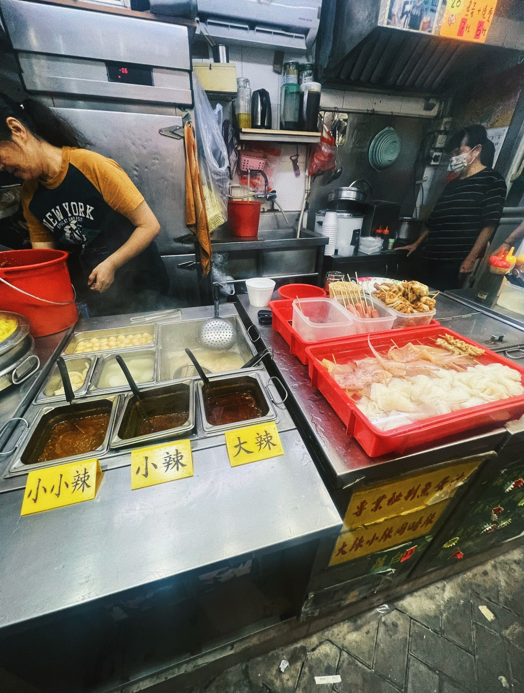
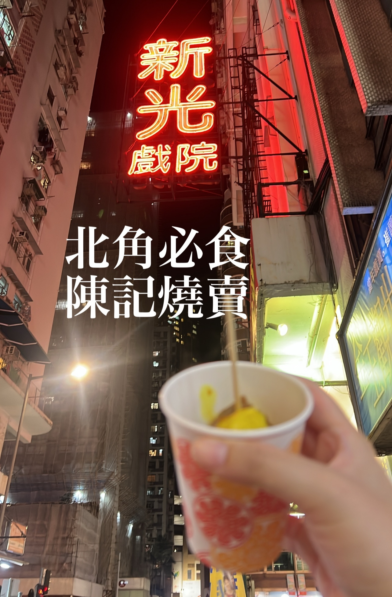
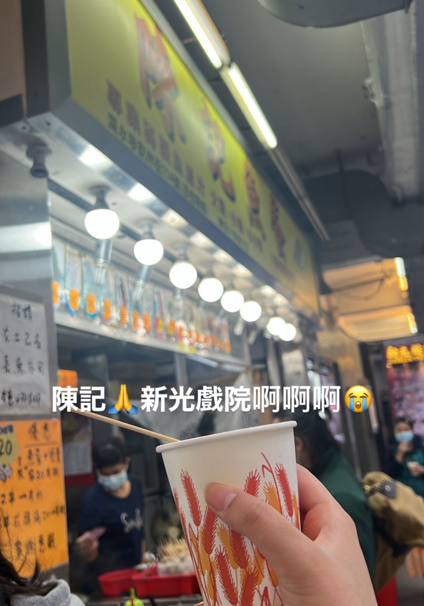
Hoi Ka Sichuan Boiled Fish
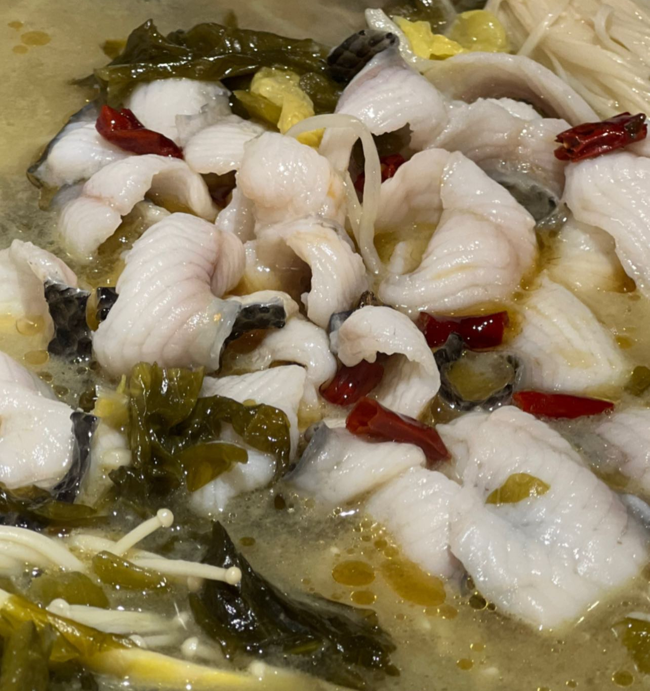
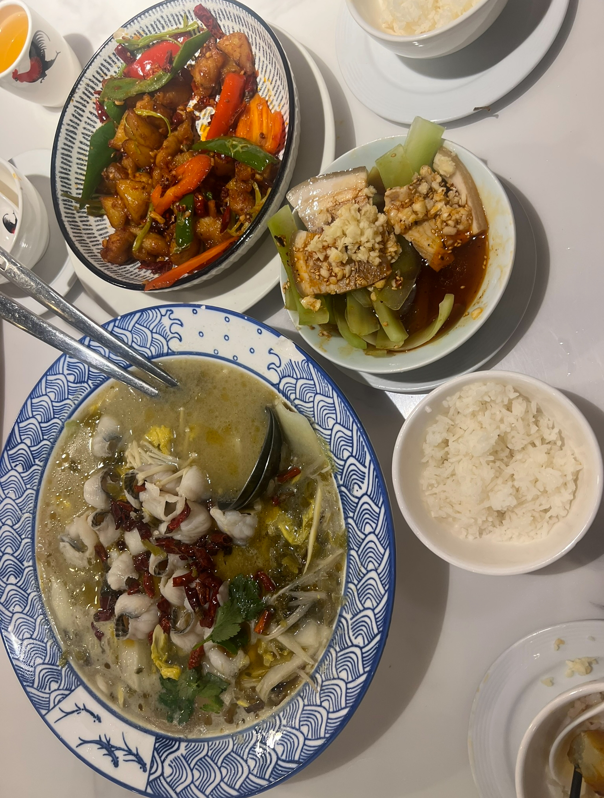
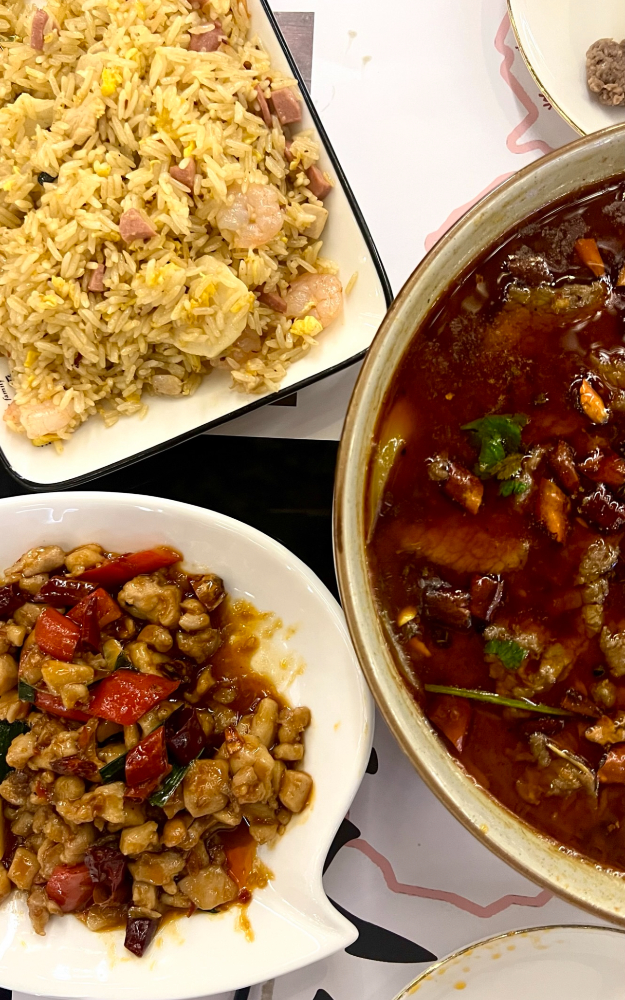
Tak Hing Lung Tofu
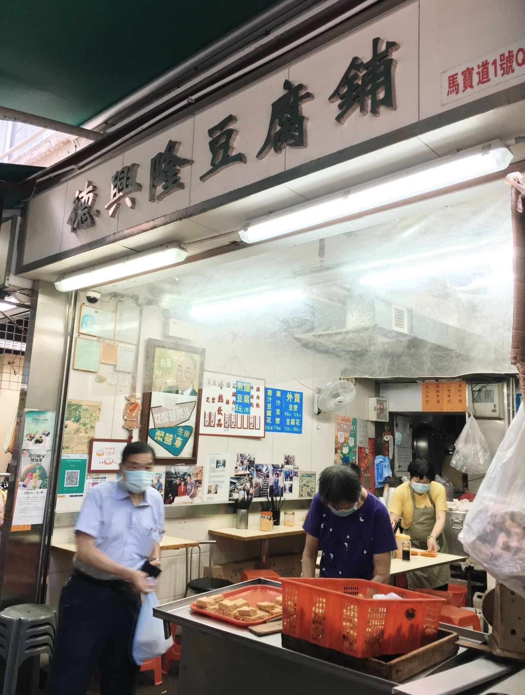
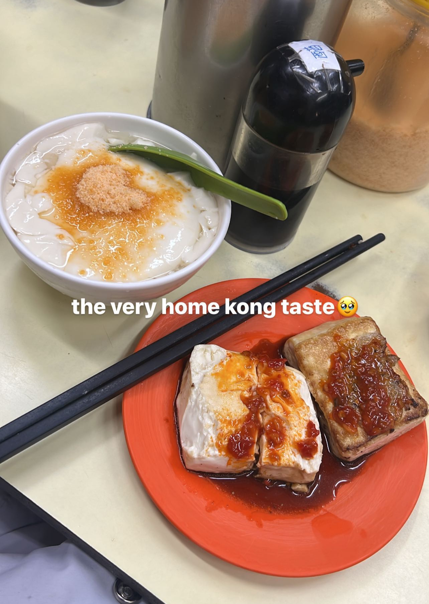
Causewaybay
He She Eat
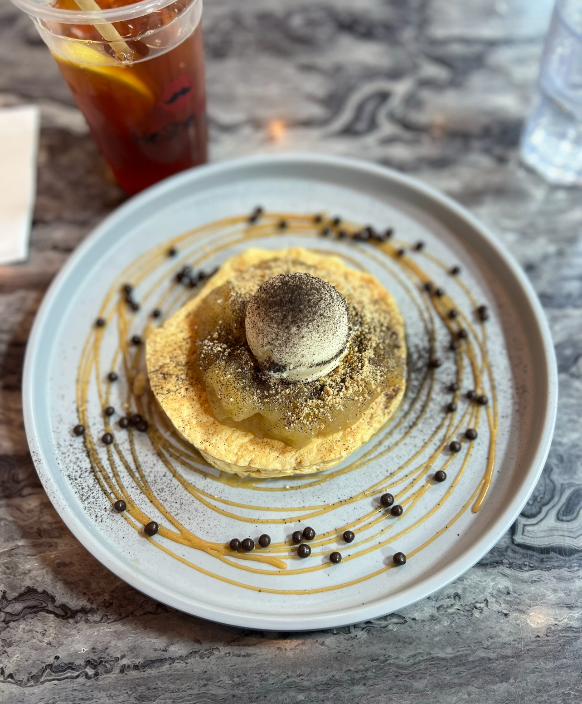
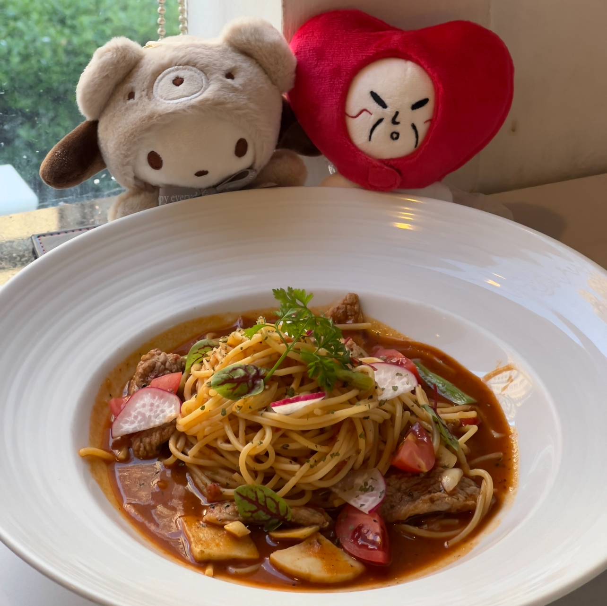
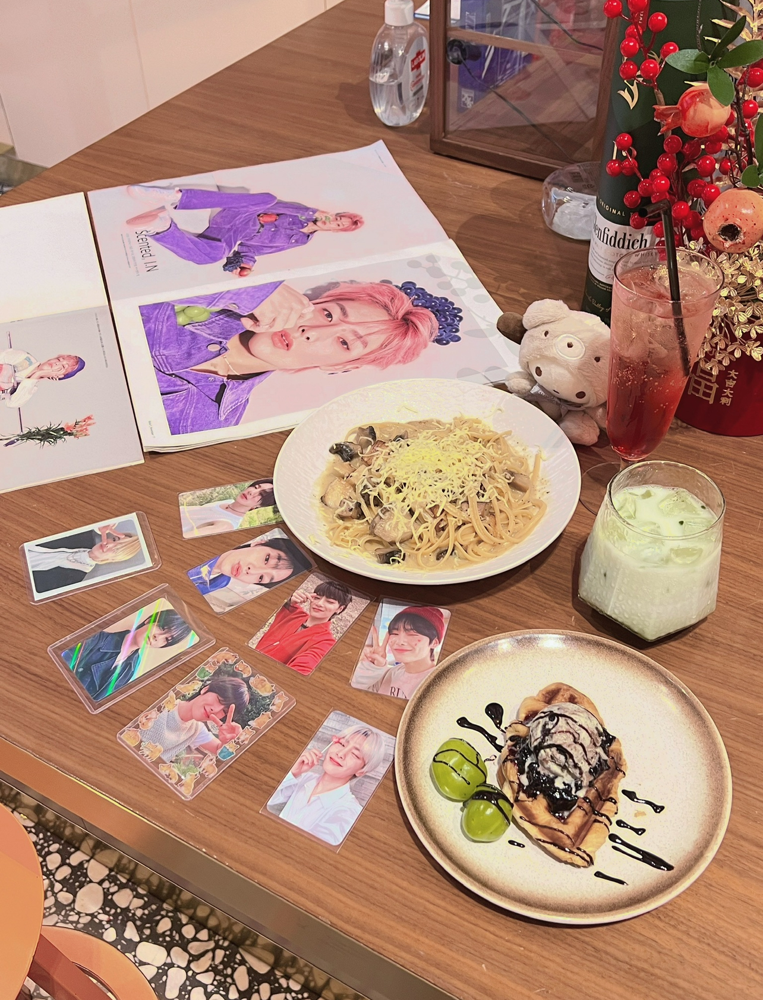